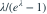

零截断 Poisson 模型参数空间为  。若所有观测都恰好为 1，则关于 MLE 的正确说法是？
。若所有观测都恰好为 1，则关于 MLE 的正确说法是？
。若所有观测都恰好为 1，则关于 MLE 的正确说法是？- AMLE 是任意正数
- B没有正参数空间内的最大值，似然上确界在 λ 趋于 0 时取得
- CMLE 等于 1
- DMLE 等于样本量 n
我已思考，展开答案与解析
正确答案：B
- 似然含参数部分为
![[\lambda/(e^\lambda-1)]^n](../practice/math/ca7f8a7aeace4c8dcdad.svg) 。
。 
在正半轴严格递减，且在 时趋于 1，因此开参数空间内没有最大值。
易错提醒把极限边界点 0 直接说成 MLE 会忽略参数空间不包含 0。
资料校订：补充回忆稿的边界例外：观测全为 1 时，正参数空间内不存在 MLE，只能在参数趋于 0 时达到似然上确界。
JYSG · 432精选 · 册内清华大学432·2025年·2(3)；边界特例；PDF第117页（印刷页115）
原题知识点延伸